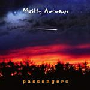

| Artist: | Mostly Autumn |
| Title: | Passengers |
| Label: | Classic Rock Legends CRL1131 |
| Length(s): | 61 minutes |
| Year(s) of release: | 2003 |
| Month of review: | [09/2003] |
| 1) | Something In Between | 3.52 |
| 2) | Pure White Light | 4.33 |
| 3) | Another Life | 4.36 |
| 4) | Bitterness Burnt | 4.56 |
| 5) | Caught In A Fold | 3.52 |
| 6) | Simple Ways | 6.13 |
| 7) | First Thought | 4.46 |
| 8) | Passengers | 6.05 |
| 9) | Distant Train | 4.50 |
| 10) | Answer The Question | 5.01 |
| 11) | Pass The Clock | 12.08 |
Pure White Light opens with a pretty strong guitar and heavy drums. Josh's vocals are more able to add strength to the track, although the chorus with the acoustic guitar and high melody is pretty accessible still. As the track moves towards the climax, the melodic side takes precedence.
Another Life opens with piano and cello, the pre-amble for a melancholic track, with a lingering feel, sung by Findlay. Good song.
Bitterness Burnt opens with Spanish guitar supporting Findlay. For the first time we clearly hear the flute, with that making this track refer to the band's heritage. Even in picking up speed, the track remains close to All About Eve.
Findlay uses her voice with more strength in Caught In A Fold. The guitar is not quite hard, but definitely less than folky, as are rhythm and flute. The strength could by compared to Jethro Tull (when they still made good music), without further sounding like that. The track closes with hauting wind leading into the Simple Ways initially besung by Josh, later joined by Findlay. The song breaks through pretty beautifully with layered vocals, as well as instruments. The lingering instrumental section further improves on things. Best track so far.
First Thought is pretty electrically progressive as well. Great melody, full sound.
Title track Passengers is more gentle once again, acoustic guitar, the occasional violin moving towards a rather eclectic climax. The track does have a laidback feel that moves towards lethargy.
Distant Train is an instrumental leaning on keys and guitars. Very fully sound and flowing melody, slowling building up towards a hefty climax. Good stuff, leading directly into Answer The Question, which is carried by piano, with support of heavy synths, guitars and drumming, recreating the full sound.
Pass The Clock opens with a lengthy acoustic section, gentle vocals, flute and acoustic guitar supporting the vocals by both Josh and Findlay. As part two kicks off, the acoustic guitar remains, but strengthens and is pushed on by the full organ sound. After all this eclecticism we move into a gentle outro, which is followed by part three, starting a bit too much of an acoustic duet, but picks up some stronger guitars on the way, developing into something okay.